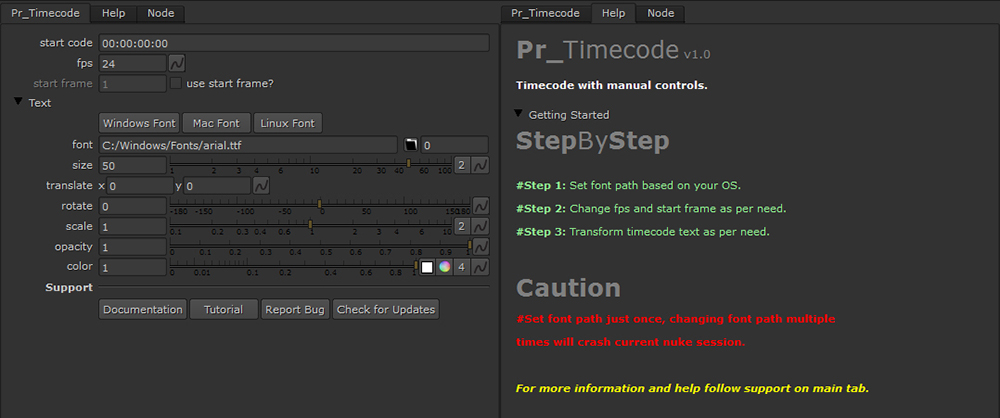

Description:
Pr_Timecode is a timecode with manual controls so you can generate a timecode as per your need.

Inputs:
Pr_Timecode has only one input which takes a image on which timecode is to be displayed.
Special Note:
Error after creating Pr_Timeode - Select a font path from Text as per your OS. After setting your font path error will terminate. If you have custom font path then set it manually.
Font path - Set your font path based on your operating system in first time, if you try to set font path multiple times then your current Nuke session will crash.
Drop frames - If you are using fps such as 29.97 or 59.94 then replace colons with semicolons in start code.
Tutorial:
Tutorial Link - https://youtu.be/jLN26LlX4IQ